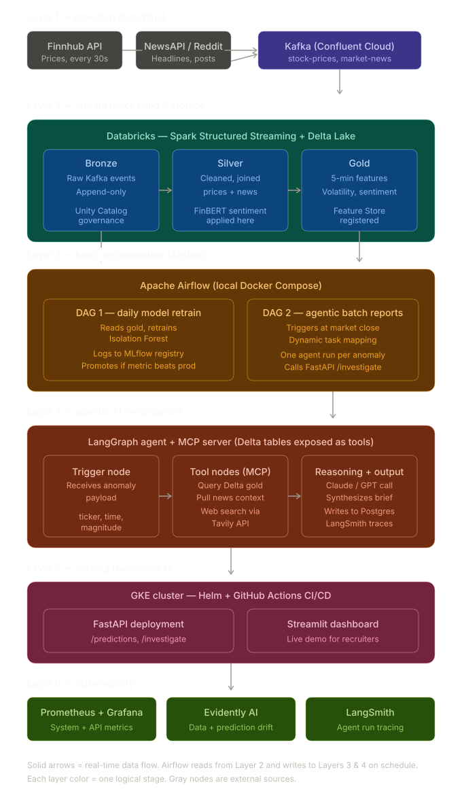

Overview
PulseTrade is a real-time financial intelligence platform that ingests live market data and news, processes it through a Databricks medallion pipeline, and uses an agentic AI investigator to explain anomalies in plain language. Stock prices and news headlines flow through Confluent Cloud Kafka, are cleaned and joined in Delta Lake, and aggregated into 5-minute feature windows. When the anomaly detector flags an unusual movement, a LangGraph agent powered by Gemini investigates, querying historical context and writing a markdown brief to Postgres.
From a data-engineering perspective, the project is a seven-layer streaming + agentic system: producers, message bus, stream processing, orchestration, agent layer, serving, and observability. Each layer is built around a real production constraint — bronze as append-only audit log, silver as the data-quality contract, gold as the seam between data engineering and AI.
Problem and Goal
Trading desks and retail investors see thousands of price ticks and news headlines per day. When a stock moves unusually, a human analyst has to assemble context from multiple sources — recent price history, news sentiment, related tickers — before deciding whether to act. PulseTrade automates the first pass of that triage: detect the anomaly, gather context, generate a structured brief, escalate to a human only when the evidence warrants it.
The goal was to build something cohesive, not piecemeal — one project that exercises the full modern data stack (Kafka, Spark Structured Streaming, Delta Lake, Airflow, agentic AI, Kubernetes, MLOps) rather than a portfolio of disconnected demos.
Architecture
The platform is split into seven logical layers: ingestion (Python producers polling Finnhub and NewsAPI), message bus (Kafka), stream processing and storage (Spark + Delta Lake medallion on Databricks), batch orchestration (Airflow), agentic AI (LangGraph + MCP + Gemini), serving (FastAPI + Streamlit on GKE), and observability (Prometheus, Grafana, LangSmith, Evidently AI). Real-time data flows through layers 1–3 continuously; Airflow reads from layer 2 and writes to layers 3–4 on schedule.

Layer 1 — Ingestion
Two Python producers run independently to keep ingestion concerns separated. The stock
producer
polls the Finnhub REST API every 30 seconds for five tickers (NVDA, AAPL, MSFT, TSLA, GOOGL), pulls open,
high, low, current, and previous close in a single call, and publishes a structured StockTick
message to the stock-prices Kafka topic. The news producer polls NewsAPI every
30 minutes across business and technology categories, tags each article against a keyword catalogue, drops
articles with no ticker match (~87% of headlines), and publishes NewsArticle messages to
market-news.
Why Finnhub over yfinance: early prototyping used the yfinance library, but it broke
repeatedly with internal currentTradingPeriod KeyError failures because it scrapes Yahoo's
front-end rather than calling an API. Finnhub is an official REST endpoint with explicit rate limits, returns
full OHLC plus previous close in one call, and is documented in ADR-001 as a deliberate
data-source
decision rather than a stack accident.
Both producers ship with graceful shutdown handlers, exponential-backoff retry on network errors,
acks=all for durability, and lz4 compression to reduce Kafka bandwidth.
Layer 2 — Stream Processing & Storage
The medallion architecture runs on Databricks Free Edition with Spark Structured Streaming writing into Delta Lake, governed by Unity Catalog. Three layers, three contracts:
- Bronze — raw Kafka events, append-only, no transformation. Treated as an audit log.
- Silver — cleaned, deduplicated, joined. Enforces the data-quality contract.
- Gold — 5-minute aggregated feature windows. The seam between data engineering and AI.
Bronze ingestion (01_kafka_to_bronze): Spark reads Kafka with SASL_SSL using
the kafkashaded JAAS prefix required for Databricks runtimes, parses JSON against typed schemas,
and writes to Delta tables with checkpoint paths under Unity Catalog Volumes. The availableNow
trigger lets the notebook run as a scheduled micro-batch consumer rather than a long-running stream, which
suits Free Edition's serverless model.
Silver transformations (02_bronze_to_silver_stocks,
03_bronze_to_silver_news):
Bronze rows are filtered for null tickers (a defensive measure for malformed early test messages), the
ISO-8601 timestamp is cast to a proper Timestamp, and derived features are computed:
intraday_range, gap, change_pct. Silver writes use
MERGE INTO
keyed on (ticker, quote_timestamp) for idempotency — re-running the notebook against
the same Kafka offsets produces no duplicates.
For news, each article is exploded into one row per matched ticker, then sentiment-scored with FinBERT
running inside a Pandas UDF. The model is pre-downloaded onto the Spark driver to a Unity Catalog Volume,
with HF_HUB_DISABLE_XET=1 set inside the UDF body so workers fall back to plain HTTP rather
than the Xet protocol that Volumes don't fully support.
Gold aggregation (04_silver_to_gold): Silver stock data is aggregated into
5-minute windows producing OHLC, mean price, price standard deviation, mean change percentage, and mean
intraday range. News sentiment for the same window is left-joined per ticker. The first version used
Spark's streaming windowed aggregation with watermarks, but watermark emission delays produced empty gold
windows on low-volume input. The final version reads silver as a stream but does the windowing inside
foreachBatch, treating each micro-batch as a static snapshot — no watermark complexity,
and idempotent via MERGE INTO on (ticker, window_start).
Layer 3 — Agentic AI Investigation
When the anomaly detector flags an unusual gold window, a FastAPI service receives a
POST /investigate
request and runs a LangGraph state machine. The agent is built as four pure
state → state functions wired into a directed graph:
fetch_context— queries gold for the last 30 minutes of feature windows on the ticker.fetch_news— queries silver for headlines inwindow_start ± 30 min.reason— assembles a structured prompt and invokes Gemini 2.5 Flash for analysis.write_report— persists the markdown brief plus the LangGraph state at end-of-run to Postgres.
Each node captures its errors into a state-level errors array rather than raising, so the graph
always completes — partial failures still produce a stub report with diagnostic context. The agent's
output is markdown structured into four sections: Summary, Evidence, Likely Cause, and Recommended Action.
Grounded reasoning, not rubber-stamping: in an early end-to-end test, the agent was sent a
synthetic price_spike trigger on a window where the gold data showed all four OHLC values
identical and a NULL standard deviation (only one observation). Gemini correctly flagged the
trigger as a misclassification: "This is likely noise — the data for the specified window directly
contradicts the price_spike anomaly type. The window shows open=close=high=low=276.83, indicating no price
movement." The agent cites specific numbers from the data rather than confabulating, which is exactly
the behaviour you want.
MCP server for dynamic tool use: the second iteration replaces the hardcoded node order
with an MCP (Model Context Protocol) server exposing get_recent_gold,
get_news_for_window,
tavily_web_search, and write_report as discoverable tools. Gemini decides which
tools to call and when — for one ticker it might pull historical comparison data, for another it might
web-search recent news. The investigation path becomes adaptive rather than scripted.
Layer 4 — Batch Orchestration with Airflow
Airflow runs locally via Docker Compose and orchestrates two DAGs. The streaming DAG fires
every five minutes: it triggers the bronze, silver, gold, and anomaly-detection notebooks via the Databricks
Jobs API using the DatabricksSubmitRunOperator, then the anomaly detector POSTs to the FastAPI
agent endpoint when triggers fire. The nightly DAG runs at 1 AM and handles housekeeping:
Delta table optimization, file vacuuming, and a daily report generation step.
The split between continuous Spark streaming (always-on, micro-batch) and scheduled Airflow orchestration (every 5 minutes, plus nightly) is intentional — it mirrors how production systems actually work, with streaming for low-latency data movement and batch orchestration for the cross-service workflows that span Databricks, FastAPI, and external services.
Layer 5 — Anomaly Detection
The anomaly detector is a Databricks notebook that reads the most recent gold windows every five minutes and applies three statistical rules. A window is flagged if any of these conditions hold:
change_pctexceeds 2σ of the rolling 30-minute distribution for that ticker.mean_news_sentimentdrops below −0.5 with at least two articles in the window.price_stddevrises above 3× the rolling average ofprice_stddev.
Flagged anomalies are written to a gold_anomalies Delta table, then the notebook POSTs to the
FastAPI agent endpoint with the ticker, anomaly type, and window timestamp. The detector deliberately uses
simple statistical rules rather than a trained model — the heavy reasoning lives in the agent layer,
and a transparent rule-based detector is easier to debug and tune than a black-box classifier.
Layer 6 — Serving on Kubernetes
The agent and dashboard are containerized and deployed to a GKE cluster. The Databricks pipeline stays in
Databricks; the Kafka stays in Confluent — only the stateless services move to Kubernetes. Multi-stage
Docker builds produce final images around 150 MB, run as non-root, and are pushed to Google Artifact Registry
by GitHub Actions on every push to main. Helm charts under infra/helm/pulsetrade/ render the
Deployment, Service, Ingress, ConfigMap, and Secret resources, with API keys handled as GCP-managed
Kubernetes secrets.
An ingress-nginx controller fronts the cluster: /api/* routes to the FastAPI
deployment (three replicas for headroom), /dashboard/* routes to the Streamlit app, and
/metrics stays internal for Prometheus scraping. The CI pipeline lints, runs pytest, builds
the images, pushes them, and does a helm upgrade against the cluster — the standard modern
deploy loop.
Layer 7 — Observability
Three observability tools, each watching a different layer of the system. LangSmith traces every agent run end-to-end — you can replay any investigation, see the exact prompts Gemini received, inspect the tool calls the agent made, and debug surprising outputs. Critical for debugging agentic systems because conventional stack traces don't capture the model's decision flow.
Prometheus + Grafana handle system and API metrics. FastAPI exposes /metrics
via prometheus-fastapi-instrumentator, Prometheus scrapes on a 15-second cadence, and Grafana
dashboards visualize agent latency at p50/p95/p99, investigations per hour, error rate by endpoint, and
Postgres connection pool saturation.
Evidently AI runs in the nightly Airflow DAG and detects data drift. It compares this
week's gold feature distribution to last week's — if mean_news_sentiment,
change_pct,
or price_stddev shift significantly, it generates a drift report. This is the late-warning
system for data-source regressions, market-regime changes, or model degradation.
Streamlit Dashboard
The user-facing layer is a multi-page Streamlit app that auto-refreshes every 30 seconds. The Live Prices page renders OHLC charts per ticker straight from gold via the Databricks SQL Connector. The News Sentiment page shows sentiment trend lines and article volume over time. The Investigations page browses the agent reports stored in Postgres, with a manual trigger button so users can fire investigations on demand without curl.
Engineering Decisions Worth Highlighting
Several decisions in the build are worth calling out individually because they reflect production thinking rather than tutorial-following.
-
Per-service virtual environments. The producers, agent, and dashboard each have their
own
.venv. Airflow's pinned Pydantic v1 conflicts with LangChain's Pydantic v2; isolating environments prevents one service from breaking the others. - Bronze as append-only. Bronze never enforces schema beyond raw bytes from Kafka. Data quality is a silver concern. This separation lets you re-process bronze with a corrected silver transformation without losing history.
- Edge filtering at the producer. The news producer drops 87% of articles before they ever hit Kafka, by matching against a ticker keyword catalogue. Less downstream storage, less wasted FinBERT inference, lower Kafka egress cost.
-
Stateless gold via
foreachBatch. Streaming watermarks on low-volume data produce delayed window emission. Switching to batch-style windowing insideforeachBatchgave deterministic per-batch behaviour at the cost of one additionalspark.table()read per micro-batch — an acceptable trade for reliability. -
Async-friendly agent endpoint.
asyncio.to_threadwraps the synchronousagent.invokecall so a 10-second Gemini latency doesn't block the FastAPI event loop. Three concurrent investigations finish in roughly the same wall time as one. -
Explicit Gemini API key.
langchain-google-genaidefaults to Application Default Credentials when both ADC and an API key exist — cachedgcloudADC then fails with an opaque403 ACCESS_TOKEN_SCOPE_INSUFFICIENT. Passinggoogle_api_keyexplicitly bypasses ADC entirely.
Tech Stack
- Ingestion: Python 3.11, Finnhub REST API, NewsAPI, kafka-python
- Streaming & storage: Confluent Cloud Kafka, Databricks (Spark Structured Streaming, Delta Lake, Unity Catalog), FinBERT
- Agent: FastAPI, LangGraph, LangChain, langchain-mcp-adapters, MCP Python SDK, Google Gemini 2.5 Flash, Tavily Search
- Storage: Postgres 16 (investigations + agent state), Delta Lake (analytical)
- Orchestration: Apache Airflow on Docker Compose, Databricks Jobs API
- Serving: Streamlit, Uvicorn, GKE, Helm, ingress-nginx, Google Artifact Registry
- CI/CD: GitHub Actions, Docker multi-stage builds, GitHub-managed Kubernetes secrets
- Observability: Prometheus, Grafana, LangSmith, Evidently AI, structlog
The stack is intentionally cohesive rather than maximal: every tool earns its place by solving a real problem in the pipeline, and each layer's outputs are interpretable enough to debug without reading another layer's source code.
Conclusion
PulseTrade demonstrates that a single, cohesive project can exercise the full modern data and AI stack
end-to-end. The same pipeline produces real-time price features, runs language-model investigations,
scheduled batch reports, and structured observability — with the same data flowing through Kafka,
Delta Lake, an agentic reasoning layer, and a containerized serving stack. The decisions documented along
the way (Finnhub over yfinance, batch-windowing inside foreachBatch, explicit Gemini auth,
bronze as audit log) reflect what gets you from a tutorial that runs once to a system that runs reliably
every five minutes.